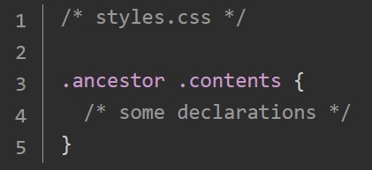

Basic CSS Syntax

Syntax-Konzept: Für einen Selektor werden property:value Paare definiert.
Selectoren
- Universal Selector: *
- Type Selectors: div, p, h1 usw...
- Class Selectors: .class-name (und dem HTML Element die entsprechende(n) Klasse(n) zuweisen.
- ID Selectors: #ID-Name (und der Klasse die entsprechende ID zuweisen)
- Unterschied von ID und Class Selector: Jedes Element kann nur eine ID, aber mehrere Klassen haben
Selectoren Gruppieren
Selectoren, die die gleichen Einstellungen bekommen sollen, können auch gruppiert werden, indem sie mit Komma getrennt aufgeführt werden
Selectoren verketten
Auf diese Weise werden alle HTML-Elemente angesprochen, die sowohl die Klasse subsection als auch die Klasse header haben
Descendant Combinator
Es gibt vier Typen von Kombinatoren, hier erstmal nur der descendant combinator. Dazu wird zwischen mehrere Selectoren ein Space gelassen. Ein Selector .ancestor .child steuert dann die Elemente an, die die Klasse .child haben und ein (Groß)Elternelement mit der Klasse .ancestor